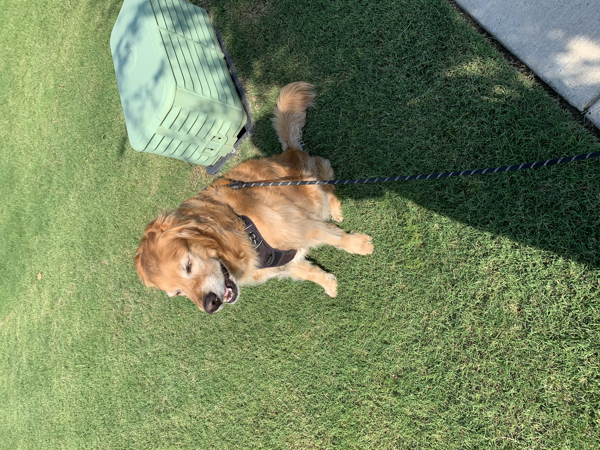
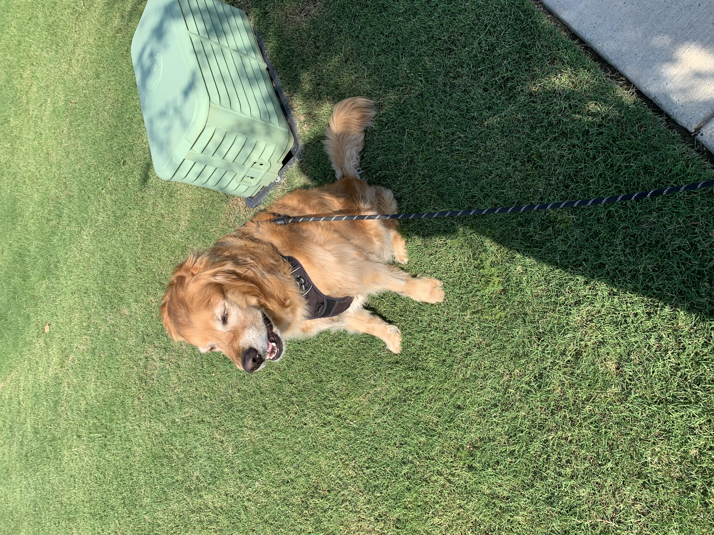
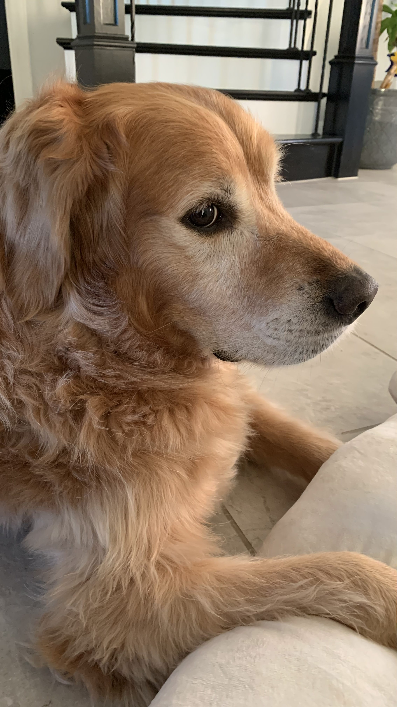
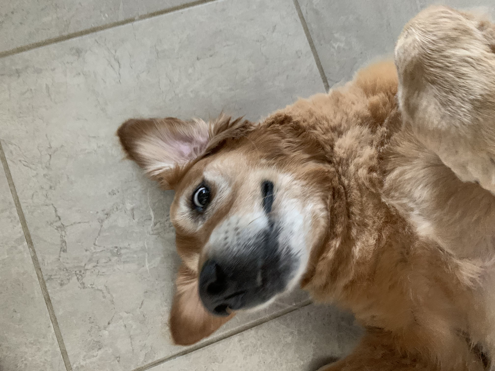
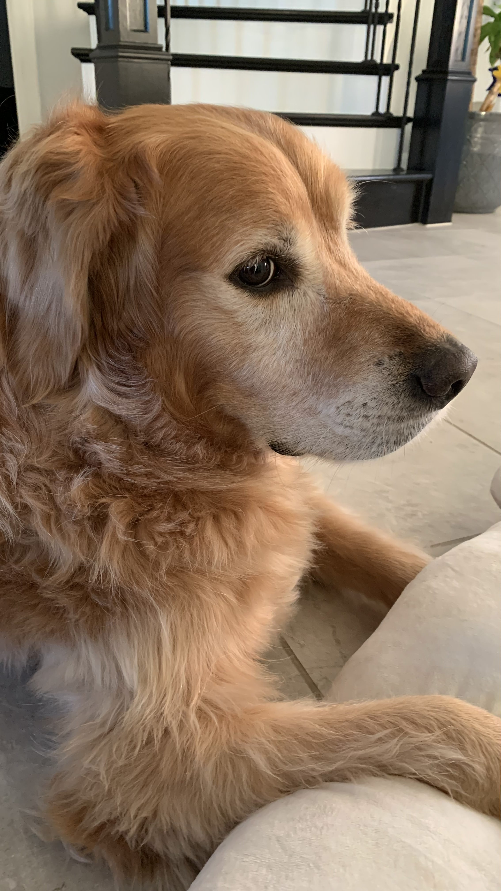
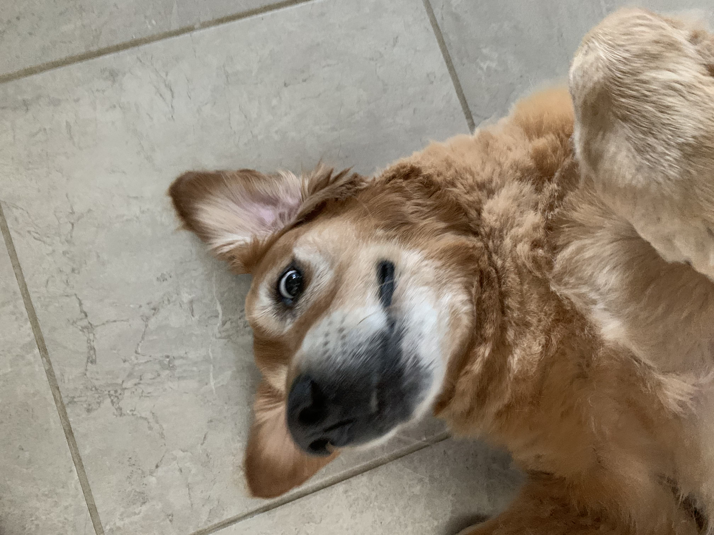

Reasons Why Eevee is the Best
 

 




Eevee is my dog. He is pretty cool. Here are Eevee's stats:
- Golden Retriever
- 5 years old
- Born on March 9, 2018
- 86 pounds
Now to the reasons why he is awesome:
- Potty trained
- Can sit on command
- Can shake hands with you on command
- Can high five you on command
- Can lay down on command
- Can roll over on command
- Can count on command
- Is billingual (He understands English and Mandarin!)
- Willingly eats his medications
- Can swim
- Willingly lets you give him pedicures
- Can be let outside without a leash
- Knows his way home
- Likes car rides
- Knows when you are sad and comforts you
- Very friendly, sweet, and gentle
- Barks when someone unexpected is outside the house
- Fast runner
- Attacks the opposition when an opposition is trying to hurt me
- Lets you dress him up
- Never bites (Fun fact! Golden retrievers have what is known as a soft mouth because they were bred to retrieve water fowl and their soft mouth allowed them to retrieve the fowl without damaging it)
- Has beautiful lucious golden fur (Fun fact! Golden retrievers have double coats that protect their sensitive skin)
- Super cute
- Super silly
- He side eyes just like me